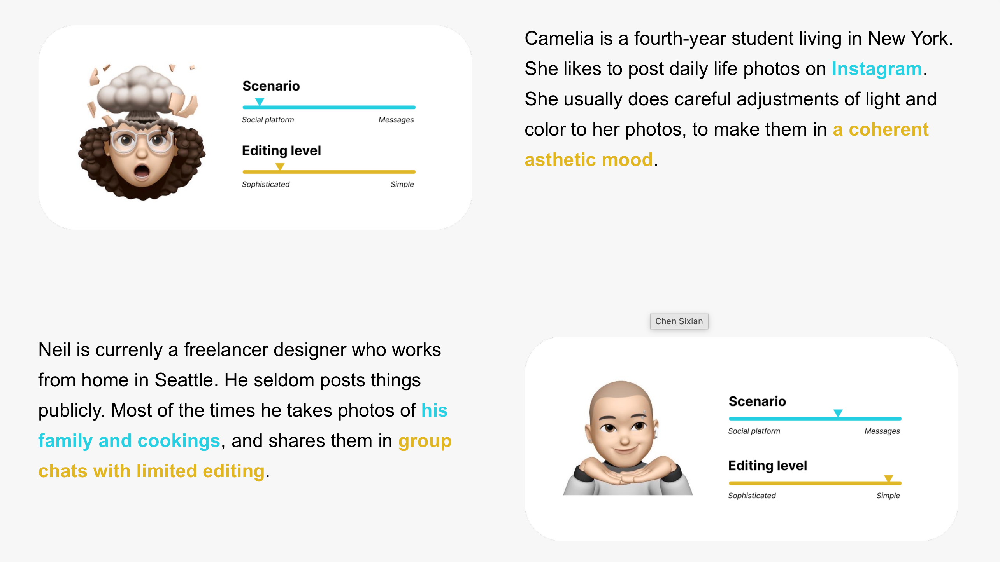

Guiding a Chinese photo-editing app into North America with in-depth interviews
Timeline
4 weeks
Role
UX Researcher
Methods
In-depth Interviews
TL;DR
Meitu, a leading Chinese photo-editing app, wanted to reach users in North America. In four weeks, I interviewed users across the US and Canada to learn why they edit photos, how they edit them, and where they share them. The findings showed that North American users edit for a natural look, not a perfect one, and share to stay connected with family and friends. This led the team to build a new product for North America rather than tweak the existing app.
Context
Taking a Chinese photo-editing app to a new market
Meitu’s editing tools are a daily habit in China. Before entering North America, the team needed to know if users there edit and share photos the same way.
Choosing Methods
Choosing in-depth interviews under a tight timeline and no budget
Research Questions
How do North American users edit and share their photos?
- 01What motivates them to edit photos?
- 02In what situations do they share photos on social media?
- 03How exactly do they edit portrait and landscape photos?
| In-depth Interviews | Diary Study | Survey | |
|---|---|---|---|
| Time & cost | Fits 4 weeks, recruited through my network at no cost |
Runs for weeks, usually needs incentives |
Quick to build, but needs a paid panel |
| Depth of insight | Follow-up questions on motivation and culture |
Rich detail on each moment |
Shows what, not why |
| Natural behavior | Relies on recall |
Captured in the moment |
Self-reported |
With more time & budget
Pair interviews with a diary study to capture editing and sharing in the moment, not from recall
Study Design
Recruiting a diverse mix of users across the US and Canada
Screening Criteria
- Born and raised in the US or Canada
- Has at least one photo-editing app installed
- Under 35
- Shares edited photos on social media, publicly or privately, at least once a month
Participants
Participants
9
Markets
US & Canada
Diversified by
GenderEthnicityRegionAge

Interview protocol
Topic
User purpose and habits of editing photos
Opening statement
Hi! I am [name], good to meet you. I am now working on a project focused on photo editing, and our team is particularly interested in photo editing behaviors of people in western cultures, including why you take photos, the process of editing and posting them on social media, and your opinions about what is beauty.
Privacy statement
This project is launched for my coursework. Personal information will be strictly confidential and desensitized, and will only be shared within our team.
Walkthrough questions (for each scenario)
- Start: Can you show me some photos you recently edited?
- Motivation: Under what circumstance did you decide to take this photo?
- Taking photos: Did you succeed the first time? If not, what adjustments did you make?
- Editing: Why do you want to edit them? How do you edit them?
- Posting: Do you post them? Before clicking the “post” button, what else did you do?
- Beauty opinions
Possible scenarios: selfies, landscape photos, product photos for eBay, etc.
Main questions
You don’t have to ask every main question. Choose the most appropriate for this interviewee.
Editing habits
Observation: Could you pick one recent photo you want to post and edit it as an example? Show us the screen and say your actions and thoughts during the process.
- Which app(s) did you use? Why?
- Which function(s)? Why?
- Which part of editing is the most difficult?
- Do you edit photos with friends? What’s the difference between doing it alone and with friends?
- If you have multiple photos, what would you like to do?
For selfies:
- Which body part do you edit most? Why?
- What is your most unsatisfied body part? How do you deal with it in the photo?
- Which body part are you most proud of? Do you edit it?
Comments on apps:
- What do you think of the app you use? Which parts are good or which parts are terrible?
- Any function or service you want to add to the app?
- Which app do you use most often? Would you recommend it?
Posting habits
- Do you post photos on social media?
- Which social media do you use more often?
- What types of photos do you post? Landscape or selfie? Could you share your most recent photos with us?
- What camera do you use to take the photos? iPhone camera, app camera, or a professional camera? Why?
- What criteria do you apply when you have to choose among so many photos to post?
Opinions on beauty and purpose of taking photos
- What do you value most in one picture?
- Can you name a friend or influencer whose photos you really like? Can you tell me why?
- Which kind of reviews on your photos do you expect to receive?
- Which kind of reviews on your photos will make you happy?
- Do you have a certain standard while editing the photo?
- Do you have any favorite idols or KOLs that influence your photo’s style?
- Can you recommend one or two KOLs who you really admire for their photos?
Useful probes
- Could you give me an example?
- Could you explain how you do this in detail?
- Anything else?
Data Analysis
Coding across researchers, then synthesizing themes as a team
01Code
- Paragraph by paragraph in Excel
- Cross-coded by a non-interviewer to reduce bias
- Async
02Cluster
- Team workshop in Figma
- Key quotes on an affinity diagram
03Synthesize
- Clusters grouped into themes
- Themes turned into key insights
Themes
Remove temporary imperfections such as pimples
Maintain natural imperfections such as freckles
Opt for better angles and lighting to enhance photos
Minimal editing principle
Authenticity is much more valued than perfection
Photos serve as a medium for friends to connect
Themes from synthesis. Raw interview data, including transcripts and coding sheets, is confidential and not shown.
Looking back
How I would speed this up with AI today
Let AI handle
TranscriptionFirst-round codingInitial clustering
Then check its work
- Compare AI tools and review where they disagree
- Feed in interviewer notes to keep the focus on what the team wants to highlight
Key Insights
North American users edit to look natural and share to stay connected
- 01The goal of editing is to look natural, not perfect.
- 02Ethnicity shapes editing behavior more than any other factor.
- 03Editing takes only a few simple steps and is closely tied to social media.
- 04Users share photos to keep in touch with family and friends, not to show off how they look.
“I want my skin tone brighter, not whiter. Most apps in the market fail to do this. I grew up in a Mexico community where people still consider whiter skin color as more beautiful, and it takes years for me to finally accept who I am.”
Interview participant
“They know me looking bad, they know me looking good, they know me in a lot of situations, so I don’t need to show them something.”
Interview participant
Personas

Market Research
Scanning competitors to find the gap in the market
Before deciding on a strategy, I mapped competing apps on the App Store and Google Play to see which user needs were already served and where the gap was.
Fast-growing competitorsUser needs they targetNetnography

Strategy
Different needs called for a different product
Option A
Tweak the existing app
Can’t close the gap in why users edit and share
Recommended
Build a new product for North America
Natural lookA few simple stepsMade for sharing with close ones